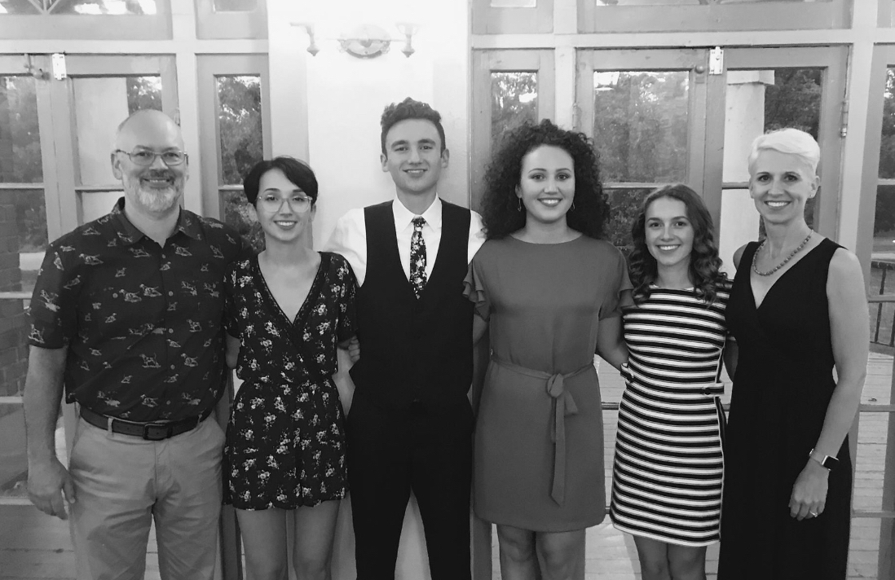
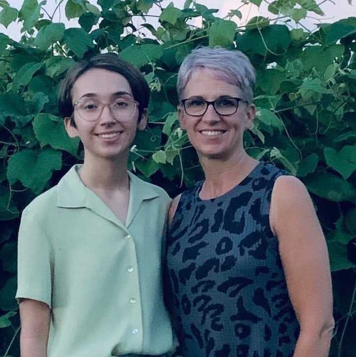
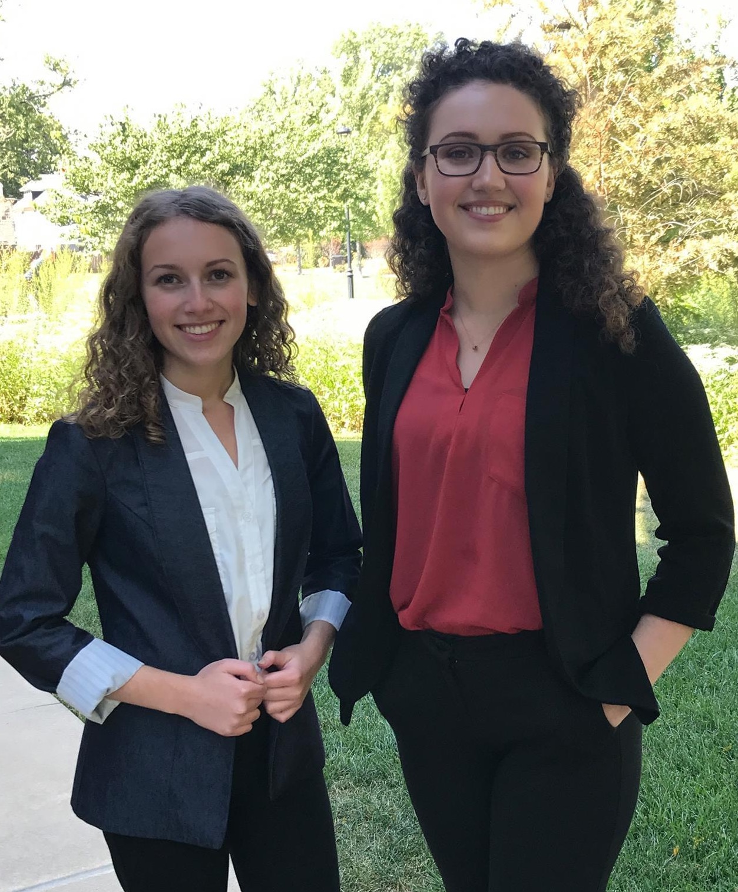

For this page, I'd like to tell you about my family!

(From left to right) my dad, Annette, me, Mikaela, Audrey, and my mom.
Annette -
Annette is 21 and currently lives with my parents and I.
She is the youngest of my 3 sisters, but is still older than me by over a year.
She loves taking care of our pets as well as the garden that she just started this summer.
We enjoy playing boardgames with my mom and playing video games like Mario Party.

Annette (left) and my mom (right)
Audrey -
Audrey is my second oldest sister and currently lives about 2 hours north of Peoria in a town called Lisle.
She is 23 and just moved to Lisle in August last year.
She received her bachelor's degree in civil engineering at Bradley University in the spring of 2020 and immediately found
employment at Hanson, an engineering consultant.
Audrey has 2 cats, Ozzy and Phoebe, and she spends her time going on hikes, doing puzzles, and laying with her cats.
Mikaela -
Mikaela is the oldest of my siblings at 25. She lives in downtown Chicago with her 2 cats, Stevie and Dandy.
Similar to Audrey, she got a bachelor's in mechanical engineering from Bradley University
and started her job at West Monroe, a business and technology consultant.
Mikaela plays the cello and piano in her spare time, as well as some video games.

Audrey (left) and Mikaela (right) at a conference in 2017
My parents: Jim and Michelle -
My dad, Jim, just turned 56 this year. He pastored at a small church in Pekin, Illinois, for over 25 years before retiring last year.
He's worked in maintenance at ICC for over 10 years now and plans to retire from the job once he hits 20 years.
For now, he just works and plays the bass guitar at local churches whenever he can.
My mom, Michelle, worked at the church with my dad from day one all the way to year 25. She also worked at Bradley University
for 10 years until she decided to leave last year and work at the post office.
She loves playing board games with Annette and I and always loves cuddles with our miniature toy poodle, Toby.